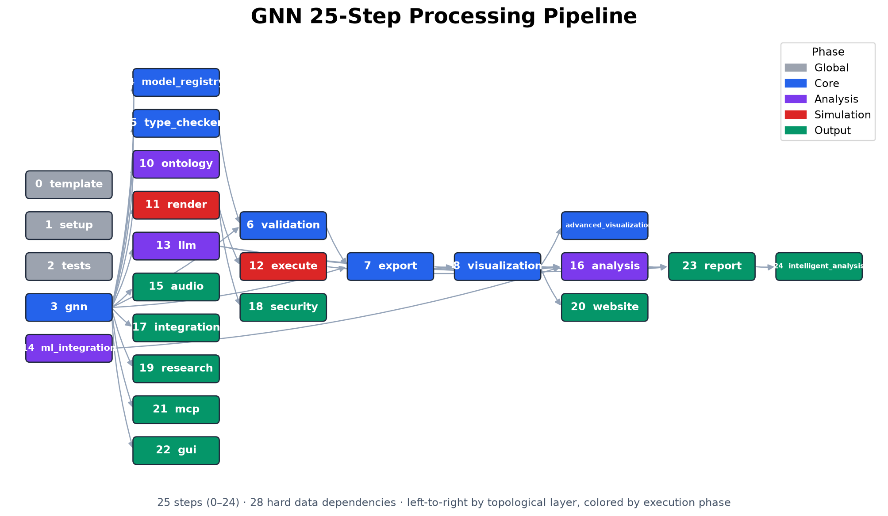
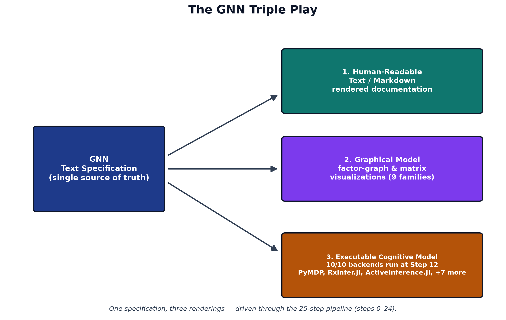

System Context
Generalized Notation Notation (GNN) couples a small, declarative text language for Active Inference generative models to a deterministic processing pipeline that turns each specification into validation, visualization, simulation, and analysis artifacts [gnn2023]. The language gives a model one canonical written form; the pipeline gives that form many executable and graphical realizations. This section describes both halves of the architecture and the way they meet, and it states the mathematical objects the language is obliged to carry.
The GNN Language
A GNN model is a plain-text document organized into named sections
that together pin down a complete partially observable Markov decision
process. The StateSpaceBlock declares the variables of the
model and their dimensions — hidden states, observations, control
factors, and policies — establishing the shape of every tensor that
follows. The Connections section records the directed and
undirected dependencies among those variables, the edges of the
underlying factor graph that downstream tools read to lay out diagrams
and wire up inference. The full construct vocabulary is catalogued in
[@tbl:gnn_constructs].
The Generative Model a Specification Denotes
Every GNN file denotes one object: a discrete state-space generative model over a horizon \(T\), factorized as in [@eq:generative_model] following the standard formulation [dacosta2020; smith2022].
\[ P(o_{1:T},\, s_{1:T},\, \pi) \;=\; P(\pi)\; P(s_1) \prod_{t=1}^{T} P(o_t \mid s_t) \prod_{t=2}^{T} P(s_t \mid s_{t-1},\, \pi) \] {#eq:generative_model}
The four matrices named in the StateSpaceBlock are
exactly the factors of [@eq:generative_model], and this
correspondence is what makes the notation translatable rather than
merely descriptive. The A matrix is the likelihood, a
column-stochastic map from hidden states to observation outcomes, given
in [@eq:likelihood].
\[ P(o_t = i \mid s_t = j) \;=\; A_{ij}, \qquad \sum_i A_{ij} = 1 \] {#eq:likelihood}
The B matrix is the controlled transition dynamics: one
column-stochastic slice per action, as in [@eq:transition].
\[ P(s_{t+1} = i \mid s_t = j,\, u_t = k) \;=\; B^{(k)}_{ij}, \qquad \sum_i B^{(k)}_{ij} = 1 \] {#eq:transition}
The C vector holds log-preferences over observations,
which enter inference as the biased outcome distribution of [@eq:preference]; the
D vector is the prior over initial hidden states, [@eq:prior].
\[ \tilde{P}(o_t = i) \;=\; \sigma(C)_i \;=\; \frac{\exp C_i}{\sum_j \exp C_j} \] {#eq:preference}
\[ P(s_1 = i) \;=\; D_i, \qquad \sum_i D_i = 1 \] {#eq:prior}
Given those factors, perception is approximate Bayesian inference: a variational posterior \(Q(s)\) is fitted by minimizing the variational free energy of [@eq:vfe], which decomposes into a complexity term and an accuracy term [friston2010].
\[ F[Q] \;=\; \underbrace{D_{\mathrm{KL}}\!\left[\,Q(s) \,\|\, P(s)\,\right]}_{\text{complexity}} \;-\; \underbrace{\mathbb{E}_{Q(s)}\!\left[\ln P(o \mid s)\right]}_{\text{accuracy}} \] {#eq:vfe}
Action is expected-free-energy minimization: each policy \(\pi\) is scored over future steps \(\tau\) by [@eq:efe], whose two terms are the
information gain a policy is expected to yield and the extent to which
its predicted outcomes match C [dacosta2020].
\[ G(\pi) \;=\; -\underbrace{\mathbb{E}_{Q(o_\tau,\, s_\tau \mid \pi)}\!\left[\ln Q(s_\tau \mid o_\tau, \pi) - \ln Q(s_\tau \mid \pi)\right]}_{\text{epistemic value}} \;-\; \underbrace{\mathbb{E}_{Q(o_\tau \mid \pi)}\!\left[\ln \tilde{P}(o_\tau)\right]}_{\text{pragmatic value}} \] {#eq:efe}
The policy posterior then combines those scores with the habit prior
E declared in the specification, as in [@eq:policy], and the
selected action \(u\) is sampled from
it.
\[ Q(\pi) \;=\; \sigma\!\left(\ln E - G\right) \] {#eq:policy}
Recent work continues to refine how expected-free-energy objectives
relate to variational inference and to alternative but equivalent
formulations, which is why GNN keeps the objects of [@eq:generative_model] through
[@eq:policy]
explicit in the notation rather than burying them in backend-specific
code [champion2024reframingEfe; nuijten2026typeInference;
nuijten2026efePlanningVariational]. A ModelParameters
section fixes the scalars those objects depend on — factor cardinalities
and precision terms — while a Time section declares whether
the model is static or dynamic and, if dynamic, how the horizon \(T\) and its discretization are organized.
Because every one of these sections is explicit text, a GNN file is at
once human-readable, diffable under version control, and unambiguous to
a parser — the property that lets the rest of the pipeline operate
deterministically.
The Processing Pipeline
The pipeline is a fixed sequence of 25 numbered steps, 0–24, each a self-contained stage that consumes the artifacts of its predecessors and writes typed outputs for those that follow. Early steps parse and type-check the GNN text and validate it against the language schema; middle steps render visualizations, export the model to executable backends, and run simulations; later steps perform analysis, reporting, and downstream integration. The data dependencies among the steps form the directed acyclic graph shown in [@fig:pipeline], which makes the whole flow inspectable: any artifact can be traced back to the step that produced it and forward to every step that depends on it.

The per-step responsibilities are enumerated in [@tbl:pipeline_steps]; each row names a step and the transformation it owns within the 0–24 range.
| Step | Module | Purpose |
|---|---|---|
| 0 | 0_template.py |
Pipeline template & initialization |
| 1 | 1_setup.py |
Environment setup & UV dependency install |
| 2 | 2_tests.py |
Test suite execution (pytest) |
| 3 | 3_gnn.py |
GNN file discovery & multi-format parsing |
| 4 | 4_model_registry.py |
Model versioning & registry management |
| 5 | 5_type_checker.py |
GNN type validation & resource estimation |
| 6 | 6_validation.py |
Consistency & semantic quality checking |
| 7 | 7_export.py |
Multi-format export (JSON, XML, GraphML, GEXF, Pickle) |
| 8 | 8_visualization.py |
Graph & matrix visualization generation |
| 9 | 9_advanced_viz.py |
Interactive / advanced visualization (Plotly, D3) |
| 10 | 10_ontology.py |
Active Inference ontology processing & validation |
| 11 | 11_render.py |
Code generation for simulation frameworks |
| 12 | 12_execute.py |
Execute rendered simulation scripts |
| 13 | 13_llm.py |
LLM-enhanced analysis & model interpretation |
| 14 | 14_ml_integration.py |
Machine learning integration & model training |
| 15 | 15_audio.py |
Audio sonification generation (SAPF) |
| 16 | 16_analysis.py |
Statistical analysis & cross-simulation aggregation |
| 17 | 17_integration.py |
System integration & cross-module coordination |
| 18 | 18_security.py |
Security validation & generated code scanning |
| 19 | 19_research.py |
Research tools & literature references |
| 20 | 20_website.py |
Static HTML website generation |
| 21 | 21_mcp.py |
Model Context Protocol processing & tool registration |
| 22 | 22_gui.py |
Interactive GNN constructor GUI |
| 23 | 23_report.py |
Comprehensive analysis report generation |
| 24 | 24_intelligent_analysis.py |
AI-powered pipeline analysis & executive reports |
This staged design keeps the architecture modular. The implementation is organized into 44 source packages, one cluster of responsibilities per concern, and is documented across 618 documentation files so that each step’s contract, inputs, and outputs are specified independently of the others. New backends or analyses attach to the graph by declaring their dependencies rather than by editing a monolith, and the deterministic step ordering means a model processed today yields the same artifacts when reprocessed tomorrow.
The Triple Play
The reason for separating a single written language from a multi-stage pipeline is the design goal GNN calls the Triple Play: one model specification, three coordinated modes of existence. The same GNN text is simultaneously a human-readable model description, a set of graphical visualizations of its state space and factor structure, and an executable cognitive model that can be run as a simulation. @fig:triple_play depicts these three faces and the shared specification at their center.

Each face is generated from the same source, so they cannot drift apart. The text is the contract a researcher reads and reviews; the visualizations expose the factor-graph structure for inspection and communication; and the executable rendering lets the identical model be simulated across inference frameworks, connecting the written specification to libraries such as pymdp for discrete Active Inference [heins2022] and to the broader tooling ecosystem for compositional model representation [defelice2021]. Because all three derive from one parsed document, GNN turns a model from a static artifact into a live object that can be read, seen, and run without re-encoding it for each purpose [smith2022].